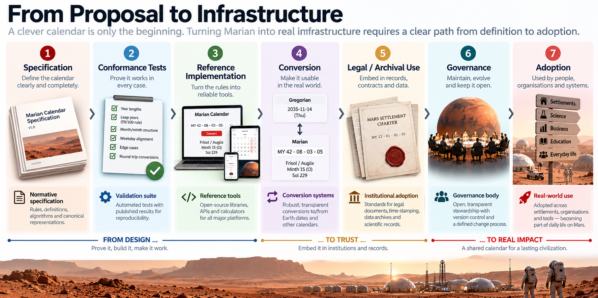

BUILD
23) When Other Things Depend on It
From Proposal to Infrastructure
A calendar becomes infrastructure when other things are allowed to depend on it.
That is a much higher bar than having an elegant specification. A paper can say that MY42-08-03-05 is a valid Marian date. Infrastructure means independently written software agrees about that date; a court can interpret it in a contract; an archive can still decode it decades later; an Earth system can convert it correctly; and a future revision does not quietly change the meaning of records already stored.
None of that requires new calendrical theory. It requires the less glamorous work that turns a design into a standard.
Marian is deliberately suited to that transition. Once MY1 has been instantiated, routine date operations follow deterministic integer rules. Leap status, month length, validity, ordinal conversion and higher-order identity do not require fresh astronomical calculation.
That makes implementation feasible.
Between a proposal and dependable infrastructure, however, lies most of the real work.
Make the calendar executable
The first requirement is a small, dependable software implementation.
Not a Mars-themed app. Not a beautiful website.
A library.
Given a Marian year, it should determine whether that year is common or leap. Given a year and month, it should return the correct month length. Given a Year–Month–Week–Day address, it should determine whether the date exists and convert it to ordinal-sol form. Given an ordinal sol, it should recover the civil date. It should identify the associated minth, Sixth and quarter.
Those are the core operations.
This matters because calendars end up everywhere: operating systems, databases, payroll, medical records, contracts, scheduling software, transport systems, spreadsheets, archives and tiny embedded systems somebody forgot were still running.
A civil calendar whose ordinary arithmetic depended on a live astronomical service would be unnecessarily fragile. Marian avoids that.
Astronomy sits at the edge of the system. Ls = 15° defines the annual reference. The epoch ties Marian chronology to physical time. After that, ordinary civil arithmetic runs locally.
That is where the complexity belongs.
The epoch is the one missing constant
At present, any complete implementation has one unavoidable gap.
The real epoch does not yet exist.
MY0 begins with the recognised first human step on Mars. MY1 begins at the first Airy-0 midnight following the next Ls = 15° passage. Until those events occur, software can implement Marian's relative calendar logic perfectly well but cannot provide the final authoritative mapping between Marian chronology and historical Earth-referenced time.
A pre-epoch library can answer:
Is MY42 a leap year?
How many sols are in Month 9?
What is MY42-08-03-05 in ordinal form?
Which minth contains that date?
It cannot truthfully answer:
What Gregorian timestamp is MY42-08-03-05?
not until the real MY1 epoch has been instantiated.
Synthetic epochs are entirely useful for simulation, testing and software development. They should simply be labelled synthetic.
When the founding event eventually occurs, an authoritative record will need to establish the recognised first human step, the relevant Ls = 15° passage and the Airy-0 midnight that begins MY1.
At that point, one missing constant becomes real.
The calendar arithmetic itself does not change.

Detailed figure description
A left-to-right illustrated process connects the proposal of a civil calendar with progressively more demanding requirements: documented rules, computation, interoperability, institutional decisions, and eventual habitual adoption. Images and boxes are arranged as an implementation journey, with a Mars settlement scene along the bottom. It presents possible future steps, not a claim that Marian is currently adopted on Mars.
Editorial note: this is a descriptive summary, not an independently verified transcription of every diagram label. Refer to the surrounding text and the Marian technical specification for authoritative numeric details where applicable.
A serial layer underneath the civil date
Software benefits from a simple continuous internal representation.
For Marian, that role can be played by a Marian Serial Sol, with Serial Sol 0 at the beginning of MY1.
The conceptual path is:
Marian Civil Date → Marian Serial Sol → absolute time coordinate → another civil or scientific representation
and in reverse:
absolute time coordinate → Marian Serial Sol → Marian Civil Date
The serial-sol layer is plumbing. Most users should never need to see it.
A person might read:
42 Augiix · Week 3 · Frisol
while a system stores:
MY42-08-03-05
and internally maps that date to a serial-sol position. An Earth-facing service can then attach the corresponding Gregorian date and timestamp.
Each layer has one job. The human representation remains readable. The machine identity remains stable. The conversion path remains deterministic.
That separation is exactly what civil infrastructure needs.
One canonical conversion path
If Marian were implemented seriously, conversion could not be left to individual software vendors to interpret.
Two libraries that disagree about a month boundary by one sol are not alternative implementations.
One of them is wrong.
The standard therefore needs one normative conversion model and a strong set of reference cases. Examples already defined by the architecture include:
MY2-01-01-01 → MY2-S001
MY2-03-08-06 → MY2-S167
MY2-03-08-07 → invalid
MY1-12-08-07 → valid, because MY1 is leap
MY42-08-03-05 → MY42-S409
A proper conformance suite would extend these across ordinary dates, month boundaries, shortened terminal weeks, leap transitions, century exceptions, minth boundaries, Sixth and quarter boundaries, invalid dates and long-range cycle checks.
The point is not to prove the mathematics repeatedly. It is to make implementation mistakes obvious.
Calendars are particularly good places for an off-by-one error to remain unnoticed until somebody's legal deadline lands on it.
Better to embarrass the code in testing.
Conformance should mean one thing
A usable standard needs a precise definition of Marian-conformant.
That definition should concern the structure rather than the preferred appearance of an interface. An application should not fail conformance because it displays Month 8 rather than Augiix, nor should a localised implementation become less Marian because it uses different natural-language names.
Core conformance should mean that systems agree on:
- year lengths;
- leap status;
- month lengths;
- valid and invalid civil dates;
- weekday-position behaviour;
- minth identities;
- date conversion;
- higher-order mappings;
- the canonical epoch once it exists.
A database may support only numeric Marian dates. A consumer application may display Janiix and Monsol. Another implementation may use entirely different labels.
All can remain conformant if the underlying date means the same thing.
That distinction between structural identity and presentation becomes increasingly valuable once software exists.
Keep the core small; use profiles around it
Implementation will quickly attract adjacent requirements.
Someone will want standard timestamp notation. Someone else will want Gregorian conversion. Transport systems will want local-time rules. Scheduling software will need recurrence semantics. Different languages will need names and formatting.
The wrong response is to expand the core Marian specification until it becomes an encyclopaedia of every adjacent use case.
A better model is a small core surrounded by profiles.
The core defines Marian civil dates. A machine-interchange profile defines serialisation. An Earth-conversion profile defines the relationship to an agreed absolute timescale and terrestrial representations. A localisation profile defines names and formatting without changing canonical identity. A local-time profile can define how a jurisdiction combines Marian dates with its chosen clock regime.
Other domains can add their own rules without rewriting the calendar.
These layers should be able to evolve independently. A new translation should not require Marian v2.0. A changed local time-zone boundary should not alter the meaning of MY73-04-02-06. A revised API should not alter the leap rule.
Standards become safer when they distinguish the thing being standardised from the systems built around it.
Recurrence rules need explicit semantics
One implementation problem deserves particular care.
Some Marian positions do not exist in every month. Week 8, Day 7 is absent from every 55-sol month.
The calendar can state whether a date exists. It cannot decide what every application should do when a recurring schedule requests one that does not.
Suppose someone creates:
Every month · Week 8 · Sunsol
What happens in a 55-sol month?
Skip the occurrence? Move it to Satsol? Move it to the next Monsol? Reject the recurrence rule?
There is no universal answer. A birthday, financial settlement, medication reminder and maintenance event may reasonably want different behaviour.
The correct division of labour is therefore:
the calendar defines whether the date exists; the scheduling profile defines what happens when it does not.
Defaults should not quietly become policy. If software makes an adjustment, that behaviour should be explicit.
Localisation must not fork the calendar
The naming architecture makes localisation relatively safe.
Month 08 remains Month 08 whether the interface calls it Augiix or something entirely different. Minth 17 remains Minth 17 whether the user sees Q, a local-language equivalent or simply 17. Day 5 remains Day 5 whether the interface displays Frisol or another term.
A language pack can therefore contain labels, abbreviations, pronunciation guidance, grammatical forms and formatting conventions without redefining the civil system.
That is technically useful and helps prevent one founding culture's vocabulary becoming embedded too deeply in the machine layer.
The reference names can be recommended.
They should not become database theology.
The standard needs several authoritative artefacts
A serious Marian implementation ecosystem would require several distinct artefacts.
| Artefact | Purpose |
|---|---|
| Normative specification | Defines canonical units, epoch rule, intercalation, valid dates, identities and invariants |
| Epoch record | Instantiates MY0 and MY1 against physical time |
| Technical record | Provides derivations, astronomical assumptions, algorithms, datasets and reproducibility |
| Conformance suite | Supplies machine-readable valid, invalid and boundary test cases |
| Reference implementations | Demonstrate correct behaviour in common software environments |
| Conversion profiles | Define relationships with absolute time and other calendars |
| Localisation resources | Map canonical structure to optional human languages and names |
| Application profiles | Define recurrence, local-time and other domain-specific behaviour |
| Governance process | Controls interpretation, maintenance and rare future correction |
| Transition guidance | Covers dual dating, archival preservation and migration |
These should not be collapsed into one document.
The book explains the architecture. The specification defines it. The technical record justifies and reproduces it. The conformance suite tests implementations. Reference code demonstrates correct behaviour but does not become the source of truth.
The code should implement the specification.
The specification should not be inferred from whichever repository happens to have the most stars.
Versioning starts before the first dependency
Once records depend on Marian, changing the standard becomes expensive.
Versioning therefore needs to distinguish clarification from structural change. A future v1.1 might improve wording, resolve an ambiguity in prose or add localisation guidance. It should not change the date represented by:
MY42-08-03-05
A later implementation profile might introduce a new API syntax. That should not alter Month 6.
Changing the leap rule, altering which civil dates exist or moving the annual reference would be different. Those changes would alter the meaning of the calendar itself and would require an explicit major-version boundary, a new intercalation domain or perhaps a separate calendar identity.
Calendar version and software version must also remain distinct. Software release 4.7.2 may still implement Marian Calendar v1.0.
Otherwise every bug fix becomes a constitutional amendment.
Long-range maintenance needs governance
The most foreseeable future maintenance issue is already known.
The 59/100 rule is intended as the initial ordinary intercalation regime. Because the relevant Martian tropical recurrence changes slowly over long periods, a future authority may eventually need to decide whether a rare additional correction is justified.
That decision involves more than arithmetic.
How much phase displacement is acceptable? How far ahead must a correction be announced? Could an adjustment ever alter an already-issued legal date? Which astronomical model is authoritative? How is backward compatibility protected?
Those questions should not be answered casually by whoever happens to maintain the reference library.
A standards process should exist before the first exceptional correction becomes necessary. Its mandate should be conservative: clarify ambiguities, maintain authoritative constants, approve conformance material, coordinate profiles and manage any genuinely necessary long-range correction.
It should not periodically redesign the calendar because a committee has discovered enthusiasm.
Calendars benefit greatly from institutional boredom.
Transition is harder than coding
Writing the library is probably the easy part.
Changing what institutions mean by a date is harder.
A settlement that has already spent years using Gregorian dates, mission-sol counts or another Martian chronology may have accumulated contracts, databases, maintenance histories, medical records, school records and archives inside those systems.
A transition would therefore need to preserve both old and new coordinates.
Documents could display Marian and Gregorian dates together. Software could store an absolute timestamp alongside the local civil representation. Legacy records could retain their original chronology while gaining conversion metadata. New systems could begin using Marian where local recurrence matters while still displaying Earth dates where coordination requires them.
This would not be elegant.
Transitions rarely are.
The alternative — one morning on which every historical record magically becomes Marian — would be considerably worse.
Never rewrite the historical coordinate
This deserves a firm archival rule.
If an event was originally recorded using Gregorian time or mission chronology, that original date should remain part of the record. A converted Marian date can be added, but it should not replace the historical coordinate as though participants used Marian at the time.
The same applies in reverse. An Earth archive dealing with later Marian records should not silently convert them to Gregorian notation and discard the original.
Good archives preserve both the event and the temporal system in which it was recorded.
That means every robust date record needs a calendar identifier, not merely a string of numbers.
42-08-03-05
without saying Marian is not a safe archival date.
Nor, for that matter, is 03/04/42, which Earth has been demonstrating for some time.
Cross-world infrastructure can learn from the experience.
Legal use requires exact definitions
Once Marian dates enter contracts or legislation, informal wording becomes inadequate.
A legal system would need to define what constitutes a Marian Civil Date, which version of the specification applies, what canonical boundary governs interpretation, how local time relates to that boundary and how non-occurring recurrence positions are handled.
Cross-world agreements would need explicit calendar identifiers. Rules involving age or duration would need to distinguish Marian years from other measures where ambiguity matters.
The founding epoch would also require evidentiary precision. “The recognised first human step” is adequate for defining the architecture, but an authoritative implementation will eventually need a certified event that instantiates MY0 and, through the subsequent Ls = 15° passage and Airy-0 midnight, MY1.
The calendar can define the rule in advance.
History supplies the event.
The implementation records it.
Keep the standard open
A civil calendar intended for broad implementation should not depend on a proprietary algorithm, inaccessible documentation or the continuing survival of one vendor.
The normative rules should be publicly available. Conversion algorithms should be reproducible. Conformance tests should be accessible. Independent implementers should be able to rebuild the calendar without permission from a single provider, and archives should not depend on a particular company remaining in business.
This does not mean every application built around Marian must be open-source.
It means the civil standard itself should be open enough to implement, verify and preserve independently.
Nobody should need a licence server to discover what day it is.
Open standards also make divergent implementations easier to identify. A different language is not a fork. A different display order is not necessarily a fork. A different month name is not a fork.
Changing the leap rule, New Year reference or canonical dates is.
The principle is simple:
If two supposedly conforming systems can assign different canonical Marian dates to the same civil sol under the same epoch, the difference is structural and must be versioned or named explicitly.
Standards should prevent ambiguity.
They do not need to prevent experimentation around the standard.
From arithmetic to trust
Turning Marian into infrastructure changes what has to be trusted.
At first, the question is whether the reasoning is sound.
Then whether the specification defines every machine-relevant case clearly enough.
Then whether independent implementations agree.
Then whether archives, contracts and software can rely on the standard remaining stable.
That is a much larger project than designing twelve months.
It is also how infrastructure works.
Arithmetic starts the process. Implementation makes it reproducible. Stability makes it dependable.
A calendar begins as a proposal. It becomes a standard when other people can implement it independently. It becomes infrastructure when institutions can rely on it.